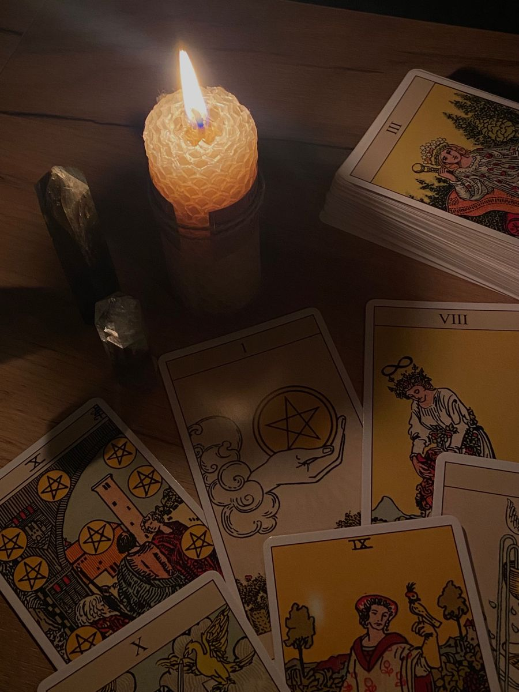

Tarô e oráculos de cartas
Leituras para clareza emocional, autoconhecimento e orientação de caminhos.

Trabalhamos com tarô e outros baralhos oraculares como ferramentas de orientação e leitura energética. As cartas ajudam a compreender o momento presente, revelar padrões que se repetem e apontar tendências para o futuro, sem tirar de você a responsabilidade pelas próprias escolhas.
A consulta em cartas é indicada para:
- questões afetivas e familiares;
- decisões profissionais e de estudos;
- entendimento de ciclos e fases de vida;
- busca de autoconhecimento e alinhamento espiritual.
As cartas não determinam um destino fechado; elas iluminam possibilidades e mostram quais atitudes fortalecem ou enfraquecem seus caminhos.